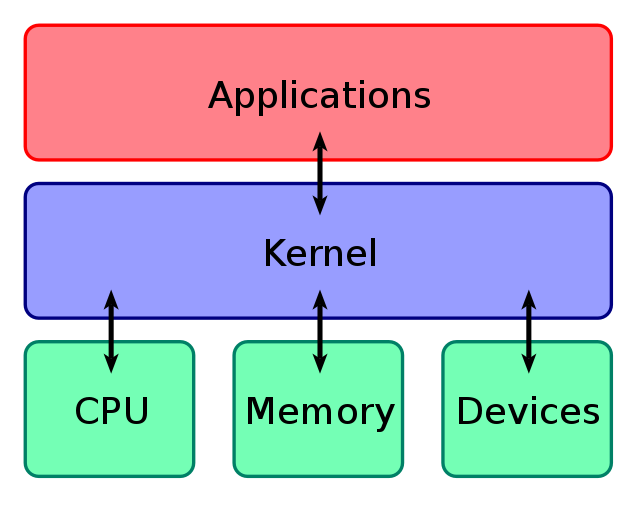
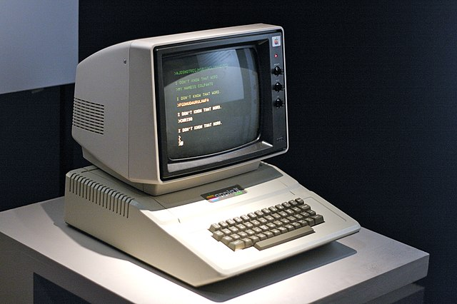
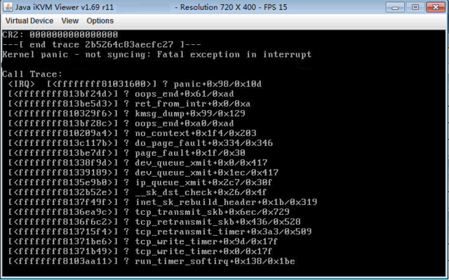

At its core, a kernel is a fundamental component of an operating system that acts as the intermediary layer between software applications and the computer's hardware. It is responsible for managing system resources, including memory, processor time, input/output devices, and file systems. The kernel ensures that each application receives the necessary resources to run efficiently and securely.

1. Process and Memory Management: The kernel oversees the
execution of processes, allocating system resources, scheduling
tasks, and managing memory. It ensures that multiple processes can
run concurrently without interfering with each other, providing a
seamless multitasking experience.
2. Device Management: The kernel interacts with hardware
devices, managing their operation and facilitating communication
between software applications and the devices. It handles device
drivers, which act as intermediaries between the hardware and
software, enabling them to work together effectively.
3. File System Management: The kernel manages file systems,
including organizing and maintaining files on storage devices. It
provides an interface for applications to access and manipulate
files, ensuring data integrity and security.
Kernels are the backbone of operating systems, providing essential services and managing system resources. They ensure the stability, security, and efficiency of the operating system. Kernels also enable the development of various software applications by providing a standardized interface for programmers to interact with hardware devices. Without kernels, modern computing as we know it would not be possible.
The kernel is a vital component of any operating system, acting as the core that enables software applications to interact with hardware devices. It manages system resources, provides essential services, and ensures the stability and security of the operating system. Understanding the role and types of kernels is crucial for anyone interested in the inner workings of operating systems and computer systems as a whole.
